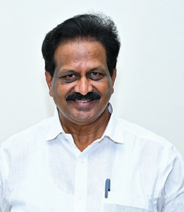
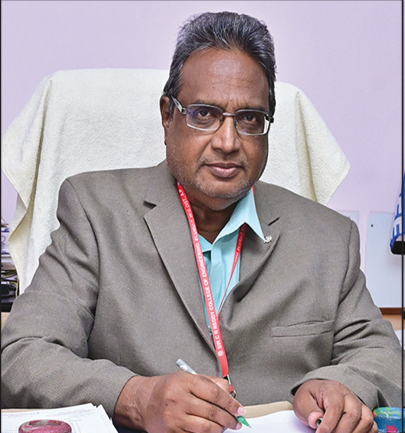

Sir C R REDDY COLLEGE OF ENGINEERING (AUTONOMOUS)

College Vision
To emerge as a premier institution in the field of technical education and research in the state and as a home for holistic development of the students and contribute to the advancement of society and the region.
College Mission
To provide high quality technical education through a creative balance of academic and industry oriented learning; to create an inspiring environment of scholarship and research; to instill high levels of academic and professional discipline; and to establish standards that inculcate ethical and moral values that contribute to growth in career and development of society in general.

Sri Jasti Mallikharjunudu (Malli Babu)
Correspondent

Dr. K. Venkateswara Rao
Principal
About Sir C.R. Reddy College of Engineering (A)
Sir C.R. Reddy College of Engineering (A) is the first Engineering College in Andhra Pradesh sanctioned and recognized by the All India Council for Technical Education (AICTE). The college is permanently affiliated to JNTUK from the academic year 2017–18.
Since its inception in 1989, Sir C.R. Reddy College of Engineering (A) has been a premier institute for quality engineering education in Andhra Pradesh under the stewardship of its broad-minded and magnanimous management. Over the last two and a half decades, the institute has consistently fulfilled its motto of “QUALITY SERVICE & VALUE BASED EDUCATION”.
Adhering to its core values, the institute gives top priority to ethical values, high standards, and a strong commitment to value-based education. The institution believes in honesty, sincerity, building trust, and maintaining long-lasting relationships with society. The faculty team is highly qualified, motivated, and supported by a friendly yet efficient work culture.
The college is situated near Vatluru Railway Gate in Eluru, the headquarters of West Godavari District. Surrounded by lush paddy fields, the campus lies on the Chennai–Howrah highway and railway route, making it easily accessible from all parts of the country by road and rail.
The institution is located on its own sprawling campus covering 30.48 acres. The vast green campus, with its impressive infrastructure and multiple academic departments, provides a stimulating and inspiring environment for students and staff alike.
The Vatluru campus brings together students from diverse backgrounds who pursue BE/B.Tech, M.Tech, and MBA programs under one umbrella, fostering academic excellence and holistic development.
OBJECTIVES
To build a productive and mutually beneficial partnership with all stakeholders including students, faculty, management, parents, employers, and alumni and to transform students in to competent engineering professionals with good ethical values and societal responsibilities, the college has identified the following objectives in tune with the Vision and Mission of the institute: To provide students with a solid foundation in the principles of engineering and technology. To Improve the analytical and problem-solving skills of students. To provide a solid foundation for good communication skills. To instil discipline and hard work necessary for academic achievement in students. To inculcate skills necessary for team work and resources management by taking up multi-disciplinary projects, participation and organization of co-curricular activities. To make students aware of statutory and international standards for design so as to face challenges in the industry. To provide an environment that will help students grow into responsible citizens with good moral and ethical values. To improve continuously the critical areas of faculty education and training for effective content delivery, academic and industrial research. To develop rapport and partnership with industries and professional bodies for awareness on on-going technological developments. To build industrial consultancy work and possible solutions to engineering challenges faced by the society wherever possible.